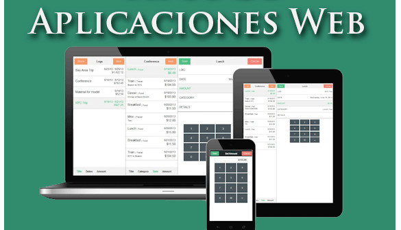
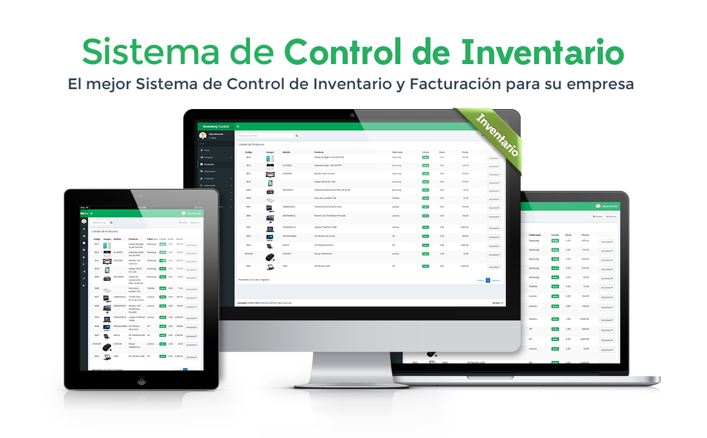
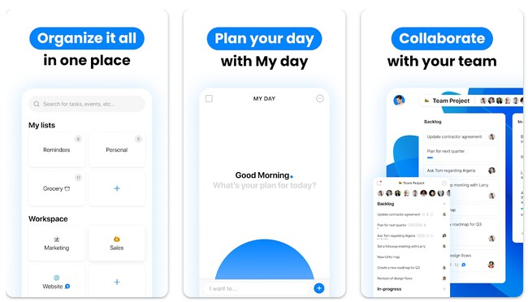
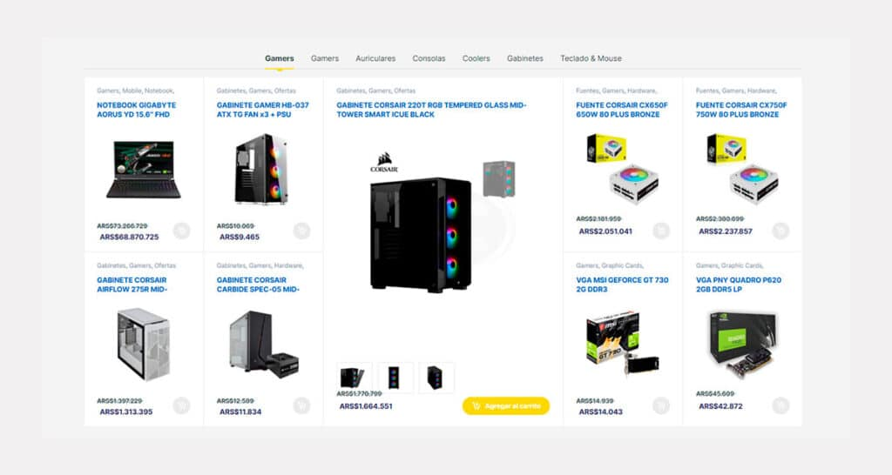

Proyecto de Aplicación Web
Proyecto de Sistema de Inventario
Proyecto de Análisis de Datos
Proyecto de Red Segura

Proyecto de Aplicación Móvil
Proyecto de E-commerce
Tecnologías Utilizadas
- JavaScript
- React
- Node.js
- SQL